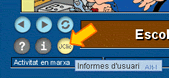
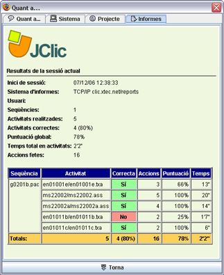

|
|
Sistema d'informes de seguiment de la tasca de l'alumnat El JClic permet consultar els resultats de l'alumnat en cada sessió. Per accedir a aquests resultats es pot fer clic al botó "JClic" que es troba a la part inferior esquerra de la finestra on es realitzen les activitats:  La finestra d'informes té un aspecte similar al que es mostra en aquesta imatge:  Si l’alumnat introdueix abans de començar a treballar l’identificador d’XTECBlocs, podrà recuperar en qualsevol ordinador la tasca que ha desenvolupat en sessions anteriors, amb els informes consegüents. La majoria d’activitats de resposta automàtica són incloses en aquest sistema d’informes. Hi ha però, algunes activitats on el sistema automàtic no pot intervenir, pel fet que l’avaluació depèn de l’alumnat. Són les activitats, per exemple, d’escoltar i repetir paraules o frases, en les quals l’alumnat pot gravar i escoltar-se tantes vegades com vulgui. Per poder interpretar correctament la tasca de l’alumnat en el sistema d’informes, cal associar el nom del paquet d’activitats que hi apareix (els arxius començats amb g davant d’uns números: g0101a, g0102a, etc.) amb els menús previs que apareixen. L’equivalència es llegeix de la manera següent: els dos primers números dels paquets corresponen a les entrades del menú principal. El paquet que s’inicia amb g01 és el primer bloc temàtic de contingut (Com s’escriu? Com es pronuncia?), el paquet amb la denominació g02 és el segon bloc temàtic de contingut (Qui sóc? Com sóc?) i així successivament. La taula que segueix indica els tres primers caràcters dels primers blocs temàtics:
Cada bloc temàtic conté dos nivells de dificultat: INICIACIÓ (botó verd) i APROFUNDIMENT (botó taronja) que es corresponen amb les lletres a o b del final de la denominació del paquet d’activitats: tots els paquets d’activitats que acaben en a són del nivell INICIACIÓ i els paquets que acaben en b són del nivell APROFUNDIMENT. La numeració segueix quan s’obren els submenús, on cada opció incorpora dues xifres entre els tres caràcters del bloc temàtic (g01, g02, g03...) i les lletres a o b indicadores del nivell. Per exemple, el submenú del nivell INICIACIÓ corresponent al bloc temàtic Com s’escriu? Com es pronuncia? conté les opcions de la taula següent que es relacionen amb les denominacions de la segona columna:
A continuació es presenta un llistat amb les denominacions de tots els paquets d’activitats, amb la finalitat de poder fer la consulta ràpidament o imprimir-la si s’escau:
|